AstroNot / presentation assets
Təqdimat üçün vizuallar
Rust, WebAssembly, kosmos ikonları və AstroNot görüntüləri.
Loqolar

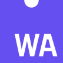




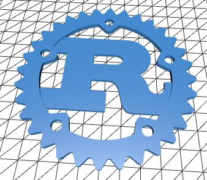

Kosmos ikonları


Kosmos şəkilləri
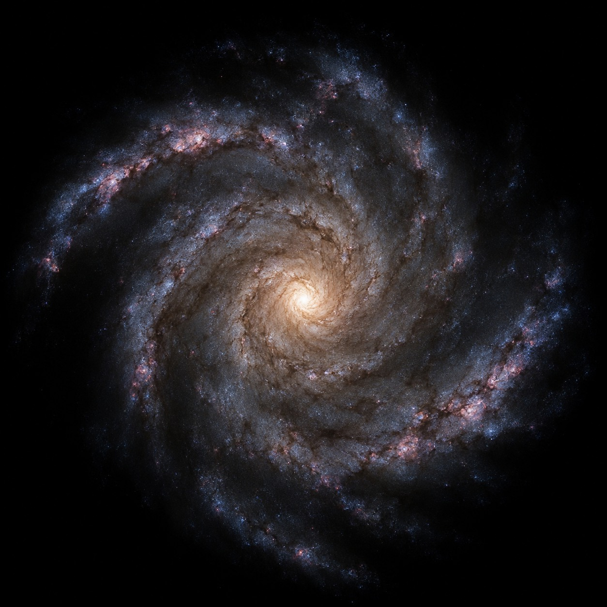

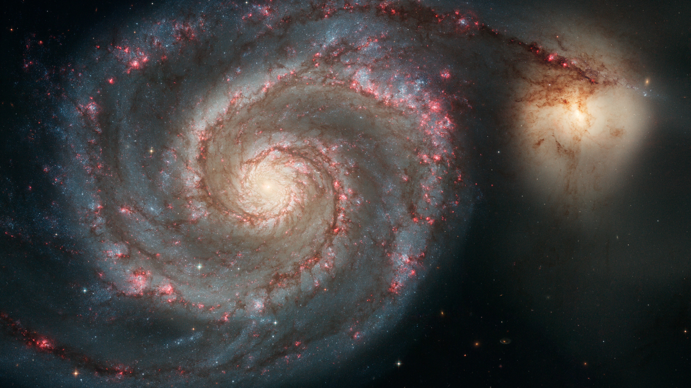


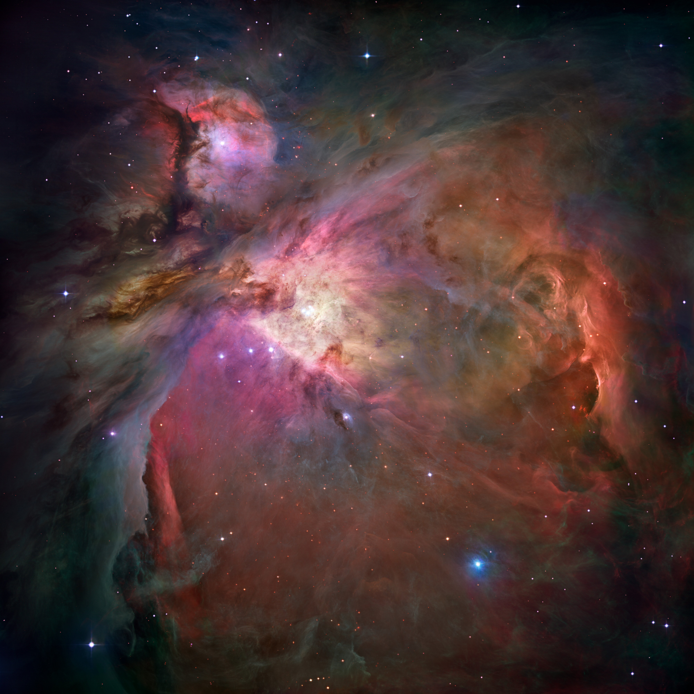


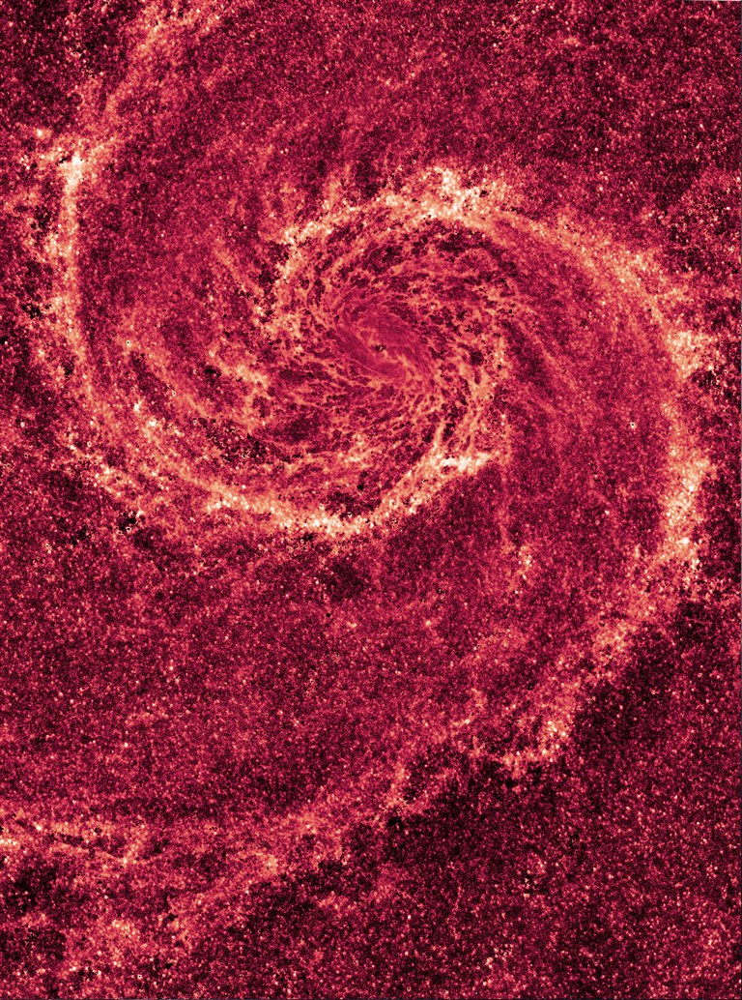

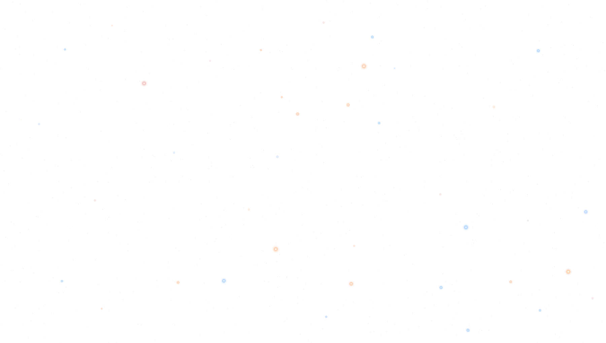

Sayt görüntüləri
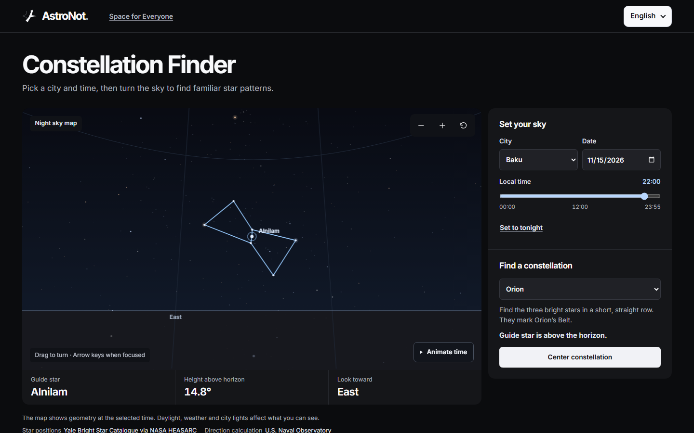


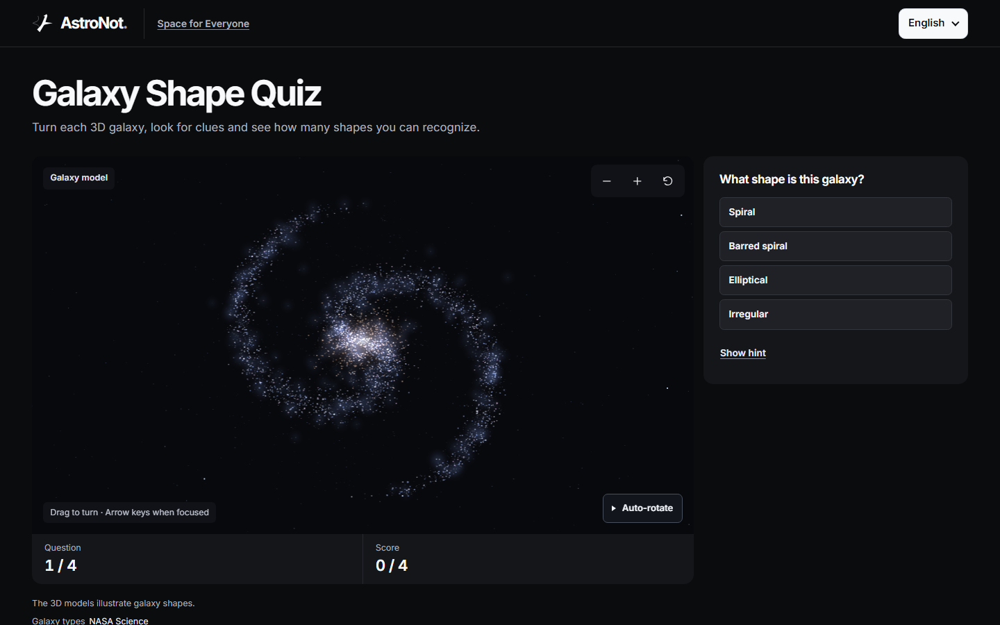


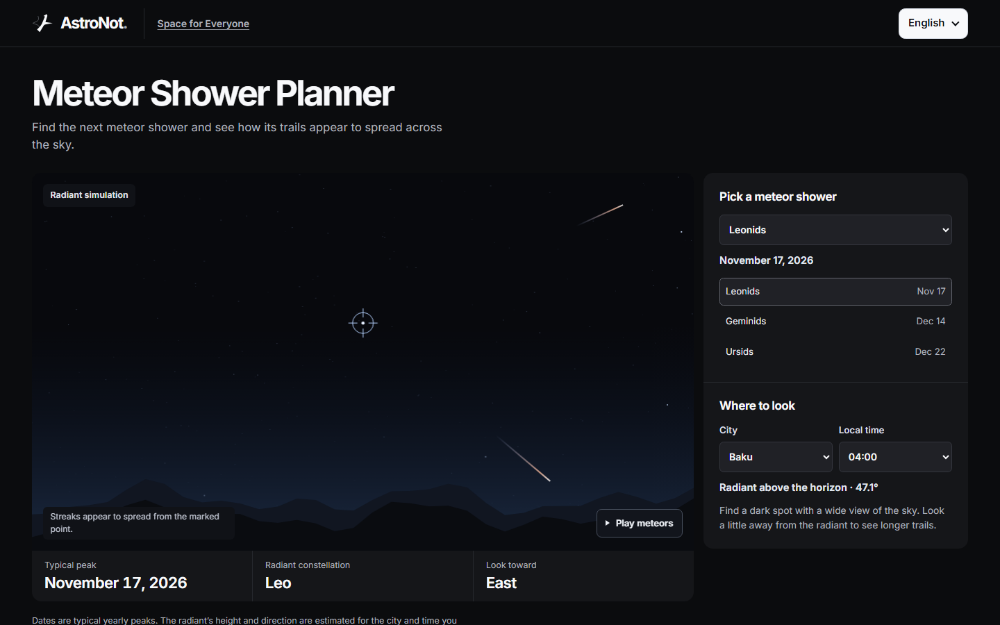


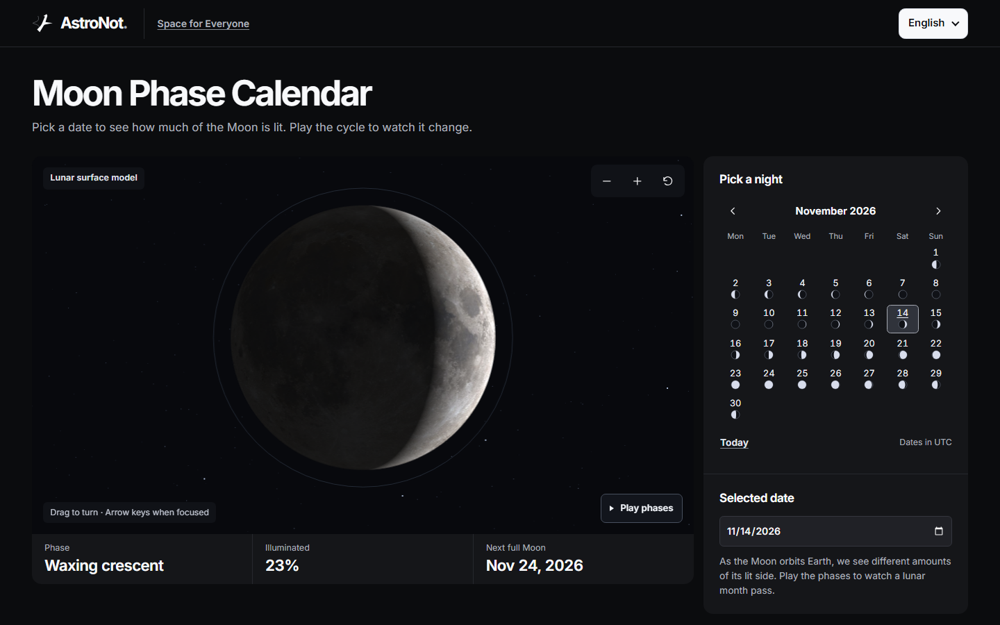


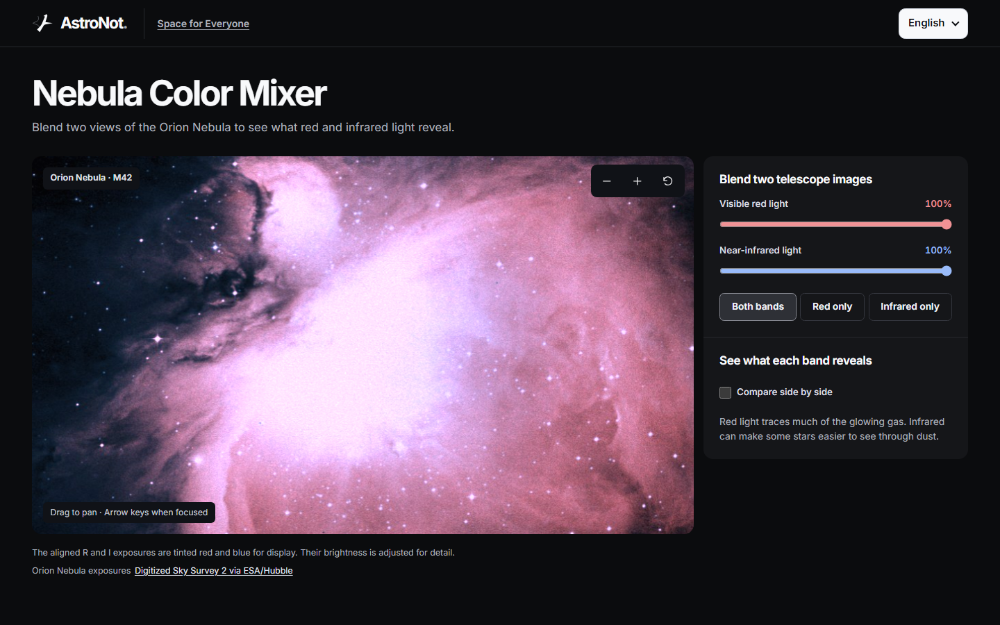


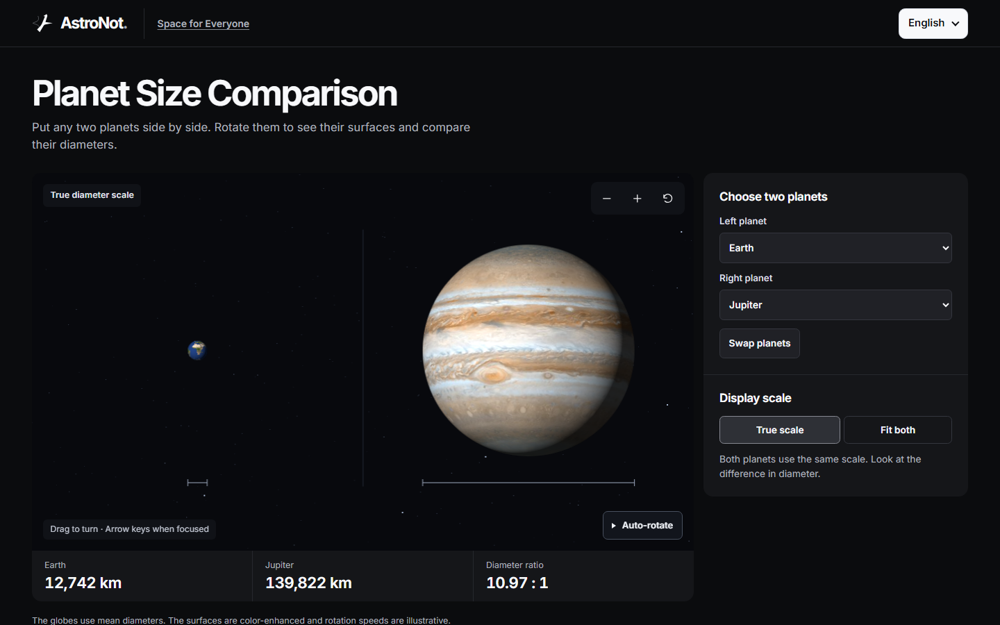